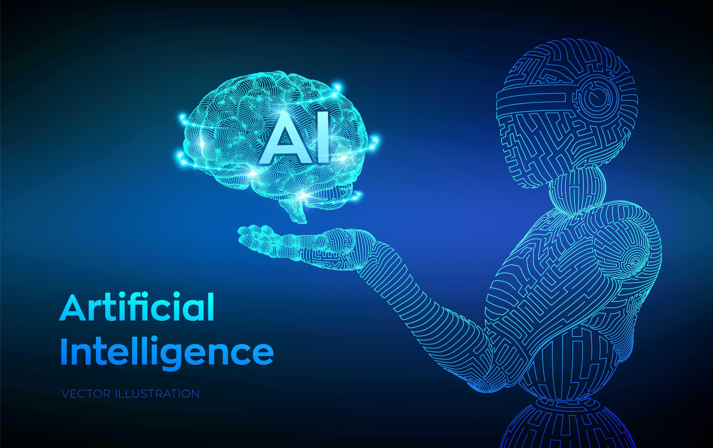

Artificial Intelligence atau yang biasa disingkat AI adalah teknologi yang memungkinkan komputer atau mesin memiliki kemampuan seperti kecerdasan manusia. AI dibuat agar komputer dapat melakukan berbagai hal yang biasanya dilakukan oleh manusia, seperti belajar dari pengalaman, mengenali pola, memahami bahasa, dan mengambil keputusan. Walaupun komputer tidak benar-benar memiliki pikiran seperti manusia, tetapi dengan bantuan program dan data yang banyak, komputer bisa meniru cara berpikir manusia dalam menyelesaikan suatu masalah. Dalam kehidupan sehari-hari, AI sudah banyak digunakan tanpa kita sadari. Contohnya seperti fitur pencarian di Google, rekomendasi video di YouTube, penerjemah bahasa otomatis, dan asisten virtual di smartphone. Teknologi ini bekerja dengan cara memproses data dalam jumlah besar lalu mencari pola dari data tersebut. Setelah itu komputer akan “belajar” dari pola yang ditemukan sehingga bisa memberikan jawaban atau melakukan tugas tertentu dengan lebih cepat dan tepat. Karena itu, AI menjadi salah satu teknologi yang sangat berkembang pada zaman sekarang.
Perkembangan Artificial Intelligence sudah dimulai sejak pertengahan abad ke-20. Salah satu tokoh yang sangat berpengaruh dalam perkembangan AI adalah Alan Turing, seorang ilmuwan matematika dari Inggris. Pada tahun 1950, ia menulis sebuah artikel yang membahas apakah mesin bisa berpikir seperti manusia. Ia juga memperkenalkan sebuah konsep yang disebut Turing Test, yaitu cara untuk mengetahui apakah sebuah mesin dapat menunjukkan perilaku yang mirip dengan kecerdasan manusia. Istilah Artificial Intelligence sendiri pertama kali digunakan pada tahun 1956 dalam sebuah konferensi di Dartmouth College, Amerika Serikat. Konferensi tersebut dihadiri oleh beberapa ilmuwan komputer yang membahas kemungkinan membuat mesin yang dapat meniru cara berpikir manusia. Sejak saat itu penelitian tentang AI mulai berkembang. Pada awalnya perkembangan AI masih terbatas karena teknologi komputer belum terlalu canggih. Namun seiring perkembangan teknologi dan meningkatnya kemampuan komputer dalam mengolah data, AI semakin berkembang pesat dan sekarang digunakan di berbagai bidang seperti pendidikan, kesehatan, transportasi, dan teknologi informasi.